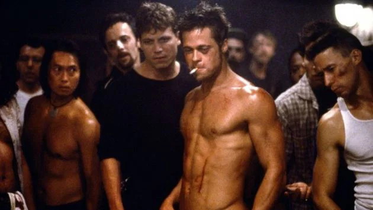

Reflexión
El club de la pelea comienza in media res, una expresión latina que quiere decir “en medio de las cosas o acontecimientos”. Se trata de una técnica literaria. La película inicia con un plano en el que el narrador tiene un arma en la boca, aparentemente sujetada por Tyler, justo antes de una explosión.
El relato inicia casi al final del desenlace, lo que ya nos anuncia que éste no será feliz. El desarrollo de la película será el que nos explique quiénes son esos hombres y cuáles han sido los eventos que los llevaron a ese punto.
El narrador no es omnisciente. Por el contrario, está confundido, enloquecido por el insomnio y el cansancio. Lo que este narrador cuenta, es decir, lo que se ve a través de su mirada, no es necesariamente la realidad. el espectador no puede confiar en él, cosa que se comprende en la medida en que la película avanza.
Esta desconfianza es confirmada cuando se descubre que se tratan de personalidades disociadas y que, después de todo, este hombre siempre estuvo solo, luchando contra sí mismo. Al obtener esa información, el espectador comprende que hubo indicios en las secuencias previas: tienen la misma maleta al conocerse, solo pagan un pasaje en el bus y, por último, el narrador nunca está presente cuando Tyler y Marla se encuentran.
El narrador pasa casi todo el tiempo trabajando para sustentarse y, cuando está libre pero solo, acaba por gastar todo su dinero en bienes materiales. Sin nombre, este hombre es una representación del ciudadano común, que vive para trabajar y reunir el dinero que luego gastará en cosas que no necesita, pero que la sociedad de consumo le induce a tener.
A causa de este círculo vicioso, los individuos son transformados en meros consumidores, espectadores, esclavos de un sistema que define el valor de cada uno según lo que posee, agotando toda su existencia. Eso es algo que sobresale en el monólogo que el protagonista hace en el aeropuerto, cuando se recuerda a sí mismo que “Esta es tu vida y ella está terminando un minuto a la vez”.
Cuando su casa y sus cosas son destruidas, finalmente lo invade la sensación de libertad. En palabras de Durden, “Solo después de perderlo todo es que somos libres de hacer lo que deseamos”. Después de desprenderse de los bienes materiales que lo controlaban, comienza a elaborar un plan para destruir el sistema capitalista y liberar al pueblo de las deudas.
La violencia surge como una forma momentánea de hacer que aquellos hombres se sientan vivos. Tal como explica el protagonista, lo más importante en las luchas no es ganar o perder, sino las sensaciones que se despiertan: dolor, adrenalina, poder. Ir al club de la pelea es como despertar de un largo sueño para descargar toda su rabia acumulada y experimentar una especie de liberación.
